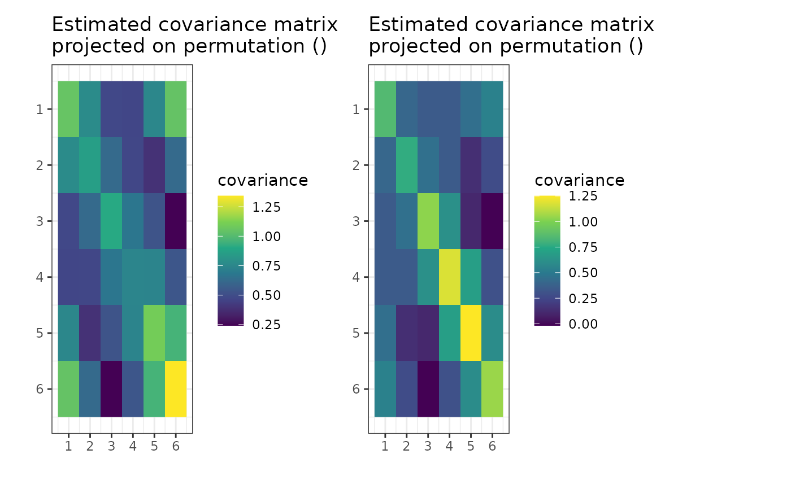

Plot optimized matrix or optimization gipsmult object
plot.gipsmult.RdPlot heatmaps of the MAP covariance matrices estimator
or the convergence of the optimization method.
The plot depends on the type argument.
Usage
# S3 method for class 'gipsmult'
plot(
x,
type = NA,
logarithmic_y = TRUE,
logarithmic_x = FALSE,
color = NULL,
title_text = "Convergence plot",
xlabel = NULL,
ylabel = NULL,
show_legend = TRUE,
ylim = NULL,
xlim = NULL,
...
)Arguments
- x
Object of a
gipsmultclass.- type
A character vector of length 1. One of
c("heatmap", "MLE", "best", "all", "both", "n0", "block_heatmap"):"heatmap","MLE"- Plots a heatmap of the Maximum Likelihood Estimator of the covariance matrix given the permutation. That is, theSmatrix inside thegipsmultobject projected on the permutation in thegipsmultobject."best"- Plots the line of the biggest a posteriori found over time."all"- Plots the line of a posteriori for all visited states."both"- Plots both lines from "all" and "best"."n0"- Plots the line ofn0s that were spotted during optimization (only for "MH" optimization)."block_heatmap"- Plots a heatmap of diagonally block representation ofS. Non-block entries (equal to 0) are white for better clarity.
The default value is
NA, which will be changed to "heatmap" for non-optimizedgipsmultobjects and to "both" for optimized ones. Using the default produces a warning. All other arguments are ignored for thetype = "heatmap",type = "MLE", ortype = "block_heatmap".- logarithmic_y, logarithmic_x
A boolean. Sets the axis of the plot in logarithmic scale.
- color
Vector of colors to be used to plot lines.
- title_text
Text to be in the title of the plot.
- xlabel
Text to be on the bottom of the plot.
- ylabel
Text to be on the left of the plot.
- show_legend
A boolean. Whether or not to show a legend.
- ylim
Limits of the y axis. When
NULL, the minimum, and maximum of thelog_posteriori_of_gipsmult()are taken.- xlim
Limits of the x axis. When
NULL, the whole optimization process is shown.- ...
Additional arguments passed to other various elements of the plot.
Value
When type is one of "best", "all", "both" or "n0",
returns an invisible NULL.
When type is one of "heatmap", "MLE" or "block_heatmap",
returns an object of class ggplot.
See also
find_MAP()- Usually, theplot.gipsmult()is called on the output offind_MAP().gipsmult()- The constructor of agipsmultclass. Thegipsmultobject is used as thexparameter.
Examples
require("MASS") # for mvrnorm()
perm_size <- 6
mu1 <- runif(6, -10, 10)
mu2 <- runif(6, -10, 10) # Assume we don't know the means
sigma1 <- matrix(
data = c(
1.0, 0.8, 0.6, 0.4, 0.6, 0.8,
0.8, 1.0, 0.8, 0.6, 0.4, 0.6,
0.6, 0.8, 1.0, 0.8, 0.6, 0.4,
0.4, 0.6, 0.8, 1.0, 0.8, 0.6,
0.6, 0.4, 0.6, 0.8, 1.0, 0.8,
0.8, 0.6, 0.4, 0.6, 0.8, 1.0
),
nrow = perm_size, byrow = TRUE
)
sigma2 <- matrix(
data = c(
1.0, 0.5, 0.2, 0.0, 0.2, 0.5,
0.5, 1.0, 0.5, 0.2, 0.0, 0.2,
0.2, 0.5, 1.0, 0.5, 0.2, 0.0,
0.0, 0.2, 0.5, 1.0, 0.5, 0.2,
0.2, 0.0, 0.2, 0.5, 1.0, 0.5,
0.5, 0.2, 0.0, 0.2, 0.5, 1.0
),
nrow = perm_size, byrow = TRUE
)
# sigma1 and sigma2 are matrices invariant under permutation (1,2,3,4,5,6)
numbers_of_observations <- c(21,37)
Z1 <- MASS::mvrnorm(numbers_of_observations[1], mu = mu1, Sigma = sigma1)
Z2 <- MASS::mvrnorm(numbers_of_observations[2], mu = mu2, Sigma = sigma2)
S1 <- cov(Z1)
S2 <- cov(Z2) # Assume we have to estimate the mean
g <- gipsmult(list(S1,S2), numbers_of_observations)
if (require("graphics")) {
plot(g, type = "MLE")
}

g_map <- find_MAP(g, max_iter = 30, show_progress_bar = FALSE, optimizer = "hill_climbing")
#> Error in find_MAP(g, max_iter = 30, show_progress_bar = FALSE, optimizer = "hill_climbing"): could not find function "find_MAP"
if (require("graphics")) {
plot(g_map, type = "both", logarithmic_x = TRUE)
}
#> Error: object 'g_map' not found
if (require("graphics")) {
plot(g_map, type = "MLE")
}
#> Error: object 'g_map' not found
# Now, the output is (most likely) different because the permutation
# `g_map[[1]]` is (most likely) not an identity permutation.
g_map_MH <- find_MAP(g, max_iter = 30, show_progress_bar = FALSE, optimizer = "MH")
#> Error in find_MAP(g, max_iter = 30, show_progress_bar = FALSE, optimizer = "MH"): could not find function "find_MAP"
if (require("graphics")) {
plot(g_map_MH, type = "n0")
}
#> Error: object 'g_map_MH' not found